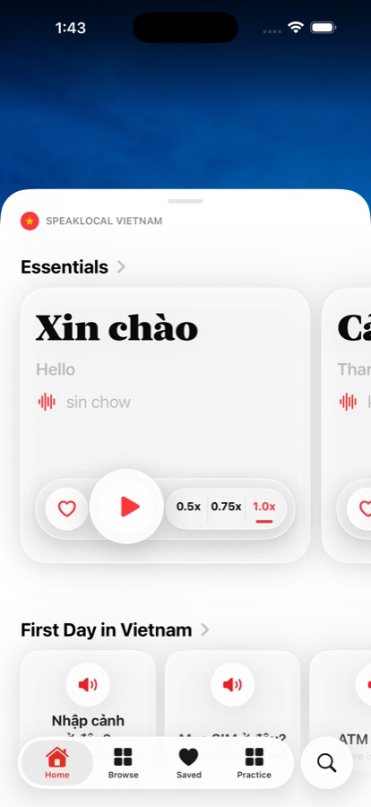
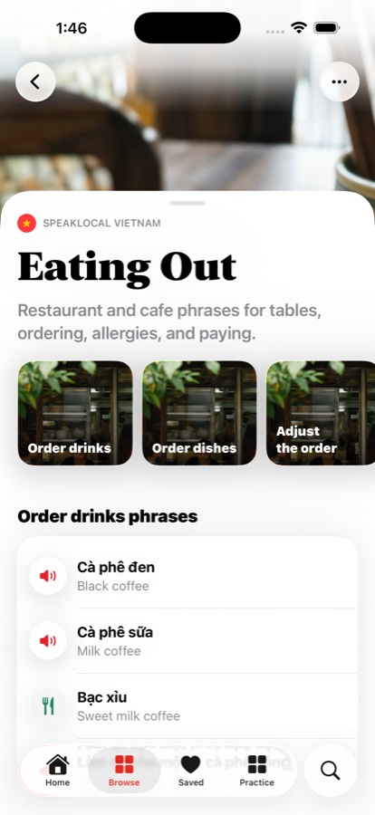
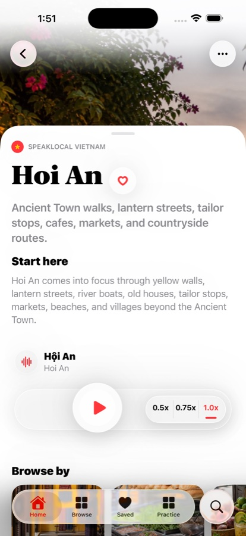
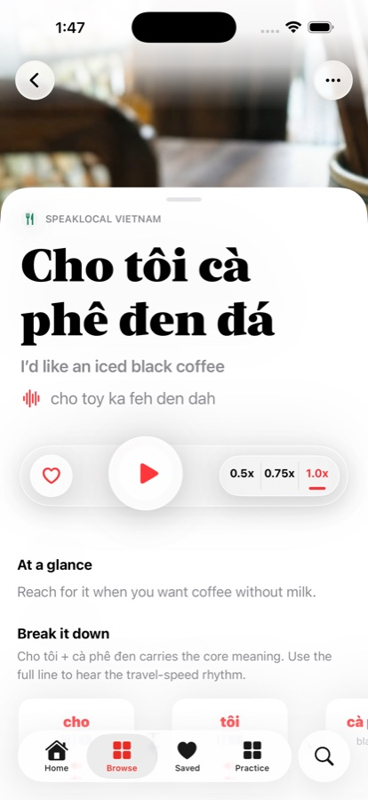
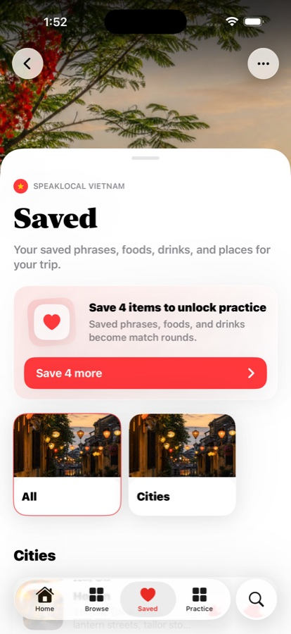
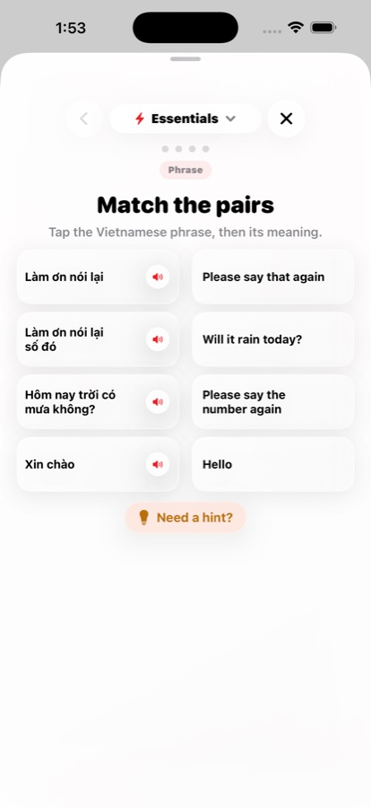

Hear
Vietnamese, meaning, pronunciation, and playback controls.
Vietnam travel companion
Food, places, phrases, audio. Plan Vietnam with the real iPhone companion for menus, city pages, saved trip moments, and short Practice.



Browse menu topics, hear phrase audio, and find the exact restaurant moment before you sit down.
Follow the audio loop
City and place pages can carry the premium travel-guide feeling while staying honest: useful context, related trip situations, and phrases you can hear.
A simple trip loop: real audio controls, saved trip items, and short Practice rounds from current native screens.
Vietnamese, meaning, pronunciation, and playback controls.

Keep food, drinks, places, and phrases close.

Short rounds, not a course or fluency promise.
App access can stay simple until the live listing and subscription setup are verified. No pricing or trial duration is shown here yet.